Bài 9: Làm việc với nhiều bảng tính
Bài 9: Làm việc với nhiều bảng tính
/en/excel/hiểu-số-định dạng/nội dung/
Giới thiệu
Theo mặc định, mỗi sổ làm việc đều chứa ít nhất mộtbảng tính. Khi làm việc với lượng lớn dữ liệu, bạn có thể tạonhiều trang tínhđể giúp sắp xếp sổ làm việc của mình và giúp tìm nội dung dễ dàng hơn. Bạn cũng có thểnhómcác trang tính để nhanh chóng thêm thông tin vào nhiều trang tính cùng lúc.
Xem video bên dưới để tìm hiểu thêm về cách sử dụng nhiều trang tính.
Để chèn một bảng tính mới:
- Xác định vị trí và chọn nútTrang tính mớigần góc dưới cùng bên phải của cửa sổ Excel.
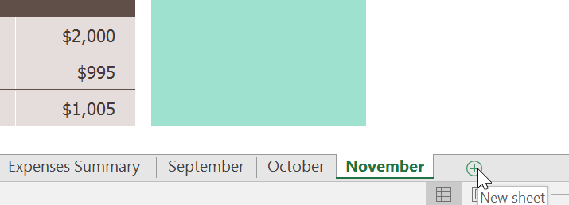
2. Mộtmớitrang tính trốngsẽ xuất hiện.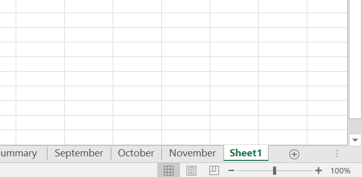
Theo mặc định, bất kỳ sổ làm việc mới nào bạn tạo trong Excel sẽ chứa một trang tính, được gọi làTrang tính1. Để thay đổisố trang tính mặc định, hãy điều hướng đếnBackstage view, nhấp vàoTùy chọn, sau đó chọn số trang tính mong muốn để đưa vào mỗi sổ làm việc mới.
Để sao chép một bảng tính:
Nếu bạn cầnsao chépnội dung của trang tính này sang trang tính khác, Excel cho phép bạnsao chépmột trang tính hiện có.
- Nhấp chuột phải vào trang tính bạn muốn sao chép, sau đó chọnDi chuyển hoặc Sao chéptừ trình đơn trang tính.
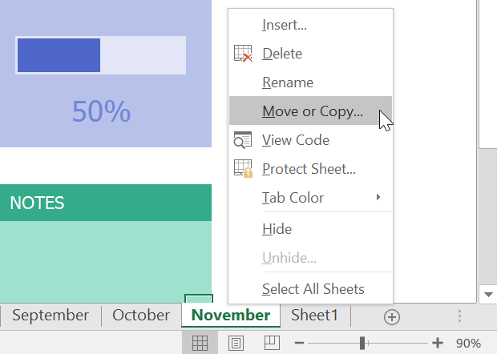
2. Hộp thoạiDi chuyển hoặc Sao chépsẽ xuất hiện. Chọn vị trí trang tính sẽ xuất hiện trong trườngTrước trang tính:. Trong ví dụ của chúng tôi, chúng tôi sẽ chọn(di chuyển đến cuối)để đặt trang tính ở bên phải trang tính hiện có. 3. Đánh dấu vào hộpbên cạnhTạo bản sao, sau đó nhấp vàoOK.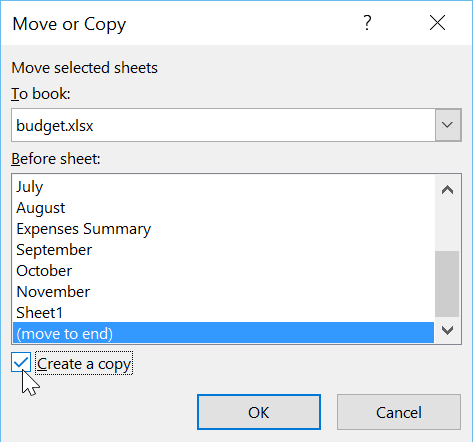
4. Bảng tính sẽ đượcsao chép. Nó sẽ có cùng tiêu đề với trang tính gốc cũng nhưphiên bảnsố. Trong ví dụ của chúng tôi, chúng tôi đã sao chép trang tínhTháng 11, vì vậy trang tính mới của chúng tôi có tên làTháng 11(2). Tất cả nội dung từ bảng tính tháng 11 cũng đã được sao chép sang bảng tính mới.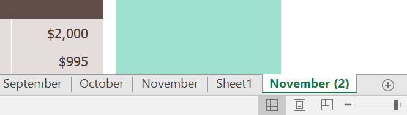
Bạn cũng có thể sao chép một trang tính sang mộtsổ làm việchoàn toàn khác. Bạn có thể chọn bất kỳ sổ làm việc nào hiện đang mở từ trình đơn thả xuốngĐến sổ:.
Để đổi tên một bảng tính:
- Nhấp chuột phải vàotrang tínhbạn muốn đổi tên, sau đó chọnĐổi têntừ trình đơn trang tính.
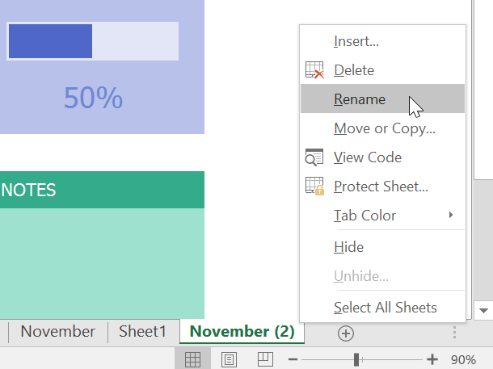
2. Nhậptên mong muốncho bảng tính. 3. Nhấp vào bất kỳ đâu bên ngoài worksheet tab hoặc nhấnEntertrên bàn phím của bạn. Bảng tính sẽ đượcđổi tên.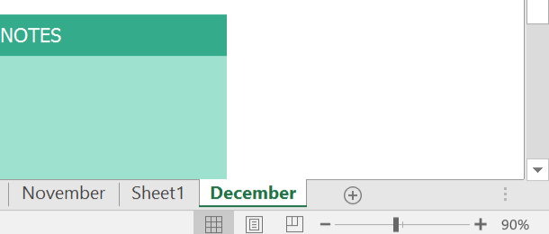
Để di chuyển một bảng tính:
- Nhấp và kéo trang tính bạn muốn di chuyển cho đến khimũi tên nhỏ màu đenxuất hiện phía trên vị trí mong muốn.
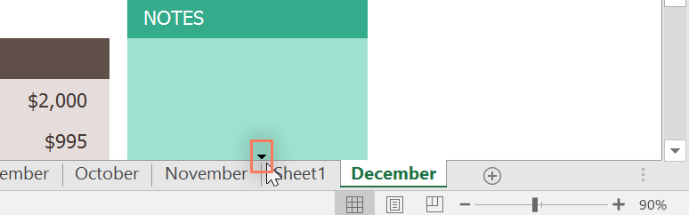
2. Thả chuột. Bảng tính sẽ được di chuyển.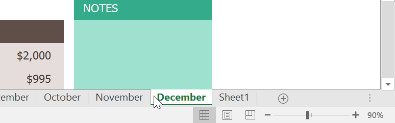
Để thay đổi màu worksheet tab:
- Nhấp chuột phải vào tab bảng tính mong muốn và di chuột quaMàu tab. Trình đơnMàusẽ xuất hiện.
- Chọnmàumong muốn.
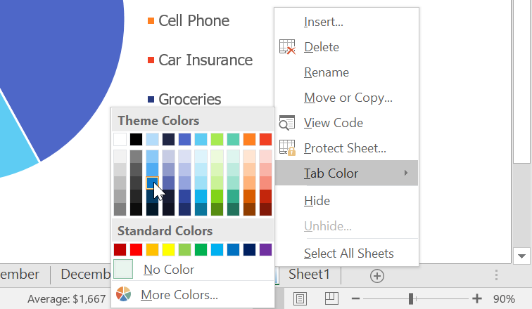
3. Màu tab bảng tính sẽ đượcthay đổi.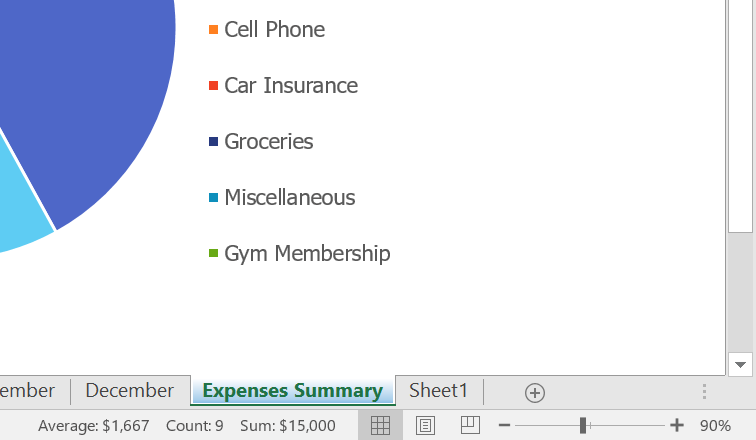
Màu worksheet tabít được chú ý hơnđáng kể khi bảng tính được chọn. Chọn một bảng tính khác để xem màu sẽ xuất hiện như thế nào khi bảng tính không được chọn.
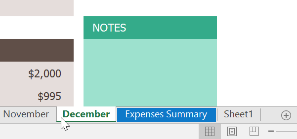
Để xóa một bảng tính:
- Nhấp chuột phải vàotrang tínhbạn muốn xóa, sau đó chọnXóatừ trình đơn trang tính.
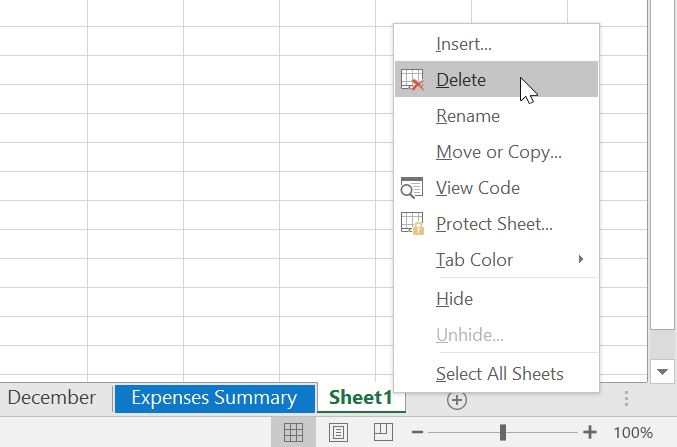
2. Bảng tính sẽ bịxóakhỏi sổ làm việc của bạn.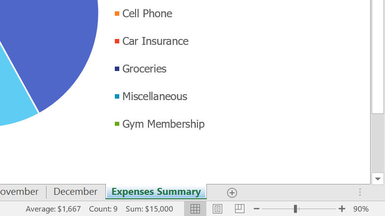
Nếu bạn muốn ngăn chặn việc chỉnh sửa hoặc xóa các bảng tính cụ thể, bạn có thểbảo vệchúngbằng cách nhấp chuột phải vào bảng tính mong muốn và chọnProtect Sheettừ trình đơn bảng tính.
Chuyển đổi giữa các bảng tính
Nếu bạn muốn xem một bảng tính khác, bạn chỉ cầnnhấp vào tabđể chuyển sang bảng tính đó. Tuy nhiên, với sổ làm việc lớn hơn, việc này đôi khi có thể trở nên tẻ nhạt vì có thể bạn phải cuộn qua tất cả các tab để tìm tab bạn muốn. Thay vào đó, bạn chỉ cầnnhấp chuột phảivào mũi tên cuộn ở góc dưới bên trái, như hiển thị bên dưới.
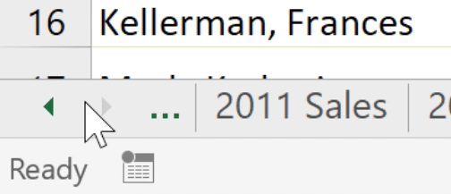
Một hộp thoại sẽ xuất hiện với danh sách tất cả các trang tính trong sổ làm việc của bạn. Sau đó, bạn có thểnhấp đúpvào trang tính mà bạn muốn chuyển tới.
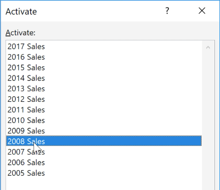
Xem video bên dưới để thấy lối tắt này hoạt động.
Nhóm và tách nhóm các bảng tính
Bạn có thể làm việc với từng trang tínhriêng lẻhoặc bạn có thể làm việc với nhiều trang tính cùng một lúc. Một số trang tính có thể được kết hợp thành mộtnhóm. Mọi thay đổi được thực hiện đối với một trang tính trong một nhóm sẽ được thực hiện đối vớimọi trang tínhtrong nhóm đó.
Để nhóm các bảng tính:
- Chọntrang tính đầu tiênbạn muốn đưa vàonhóm trang tính.
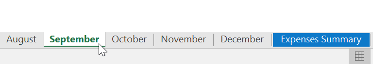
2. Nhấn và giữ phímCtrltrên bàn phím của bạn. Chọnbảng tính tiếp theobạn muốn có trong nhóm.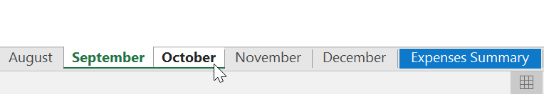
3. Tiếp tục chọn các bảng tính cho đến khi tất cả các bảng tính bạn muốn nhóm được chọn, sau đó nhả phímCtrl. Các bảng tính hiện đượcnhóm lại.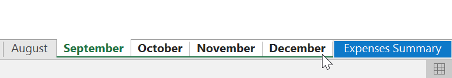
Trong khi các trang tính được nhóm lại, bạn có thể điều hướng đến bất kỳ trang tính nào trong nhóm. Mọithay đổiđược thực hiện đối với một trang tính sẽ xuất hiện trênmọitrang tínhtrong nhóm. Tuy nhiên, nếu bạn chọn một trang tính không nằm trong nhóm thì tất cả các trang tính của bạn sẽ bịkhông được nhóm.
Để rã nhóm các bảng tính:
- Nhấp chuột phải vào một bảng tính trong nhóm, sau đó chọnUngroupSheetstừ menu bảng tính.
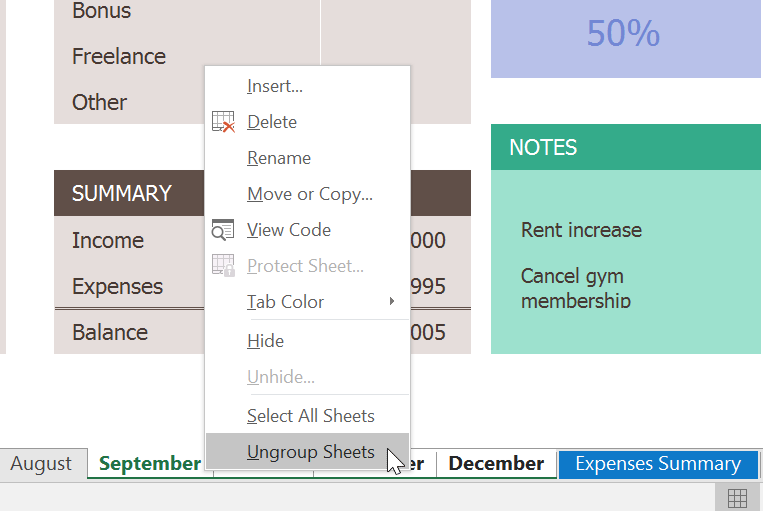
2. Các bảng tính sẽđược tách nhóm. Bạn cũng có thể nhấp vào bất kỳ trang tính nào không có trong nhóm đểrã nhóm tất cả các trang tính.Thử thách!
- Mở sổ làm việc thực hành của chúng tôi.
- Chèn một bảng tínhmớivàđổi tênnóTóm tắt Q1.
- Di chuyển bảng tínhTóm tắt chi phísang phía bên phải, sau đó di chuyển bảng tínhTóm tắt Q1sao cho nó nằm trong khoảngtháng 3đếntháng 4.
- Tạo bản saocủa bảng tính Tóm tắt chi phí bằng cách nhấp chuột phải vào tab. Đừng chỉ sao chép và dán nội dung của bảng tính vào một bảng tính mới.
- Thay đổimàucủa tab Tháng Giêng thànhxanhvà màu của tab Tháng Hai thànhđỏ.
- Nhóm các trang tínhTháng 9,Tháng 10vàTháng 11.
- Khi bạn hoàn tất, sổ làm việc của bạn sẽ trông giống như thế này:

/en/excel/using-find-replace/content/